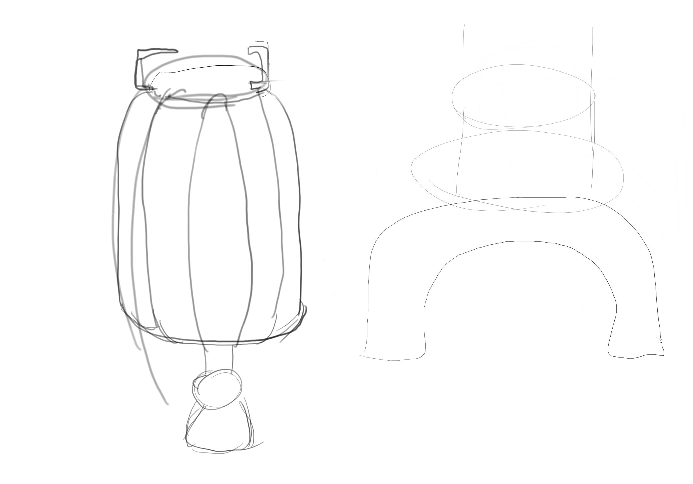
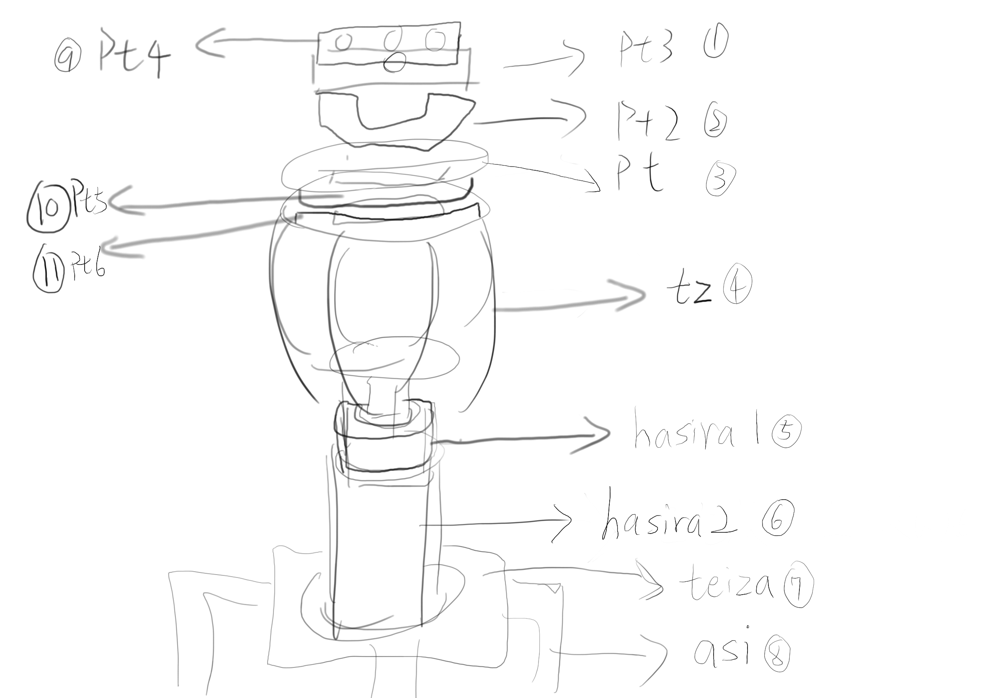

流れ
伸びれる三脚または軸で組み立てる三脚を作りたいだが、3Dプリンターが何度も作り破れたので、簡易に組み立てて小型の三脚を作るに決めた。
設計なら、何かの要素やスタイルが定めることが必要で、少し考えた後、中国灯籠式の体かつ石のアーチ橋式の下身にして作りたかった。
ptとpt2に磁石を入れ込んだ
pt3とpt2をネジで接した
asiとteizaをネジで接した
pt4 pt5 pt6 hasira1 hasira2は他のパーツに組み立てるように全部接着剤を付けた。
そして、どうやって簡易に組み立てるかとずっと考えていた間に突然うちの冷蔵庫に磁石があることと思い浮かべた。そこで、磁石でパーツを組み立てるというアイデアが出った。

完成した！

この二つのパーツに磁石を入れ込んで、自由に取り外しことができる！